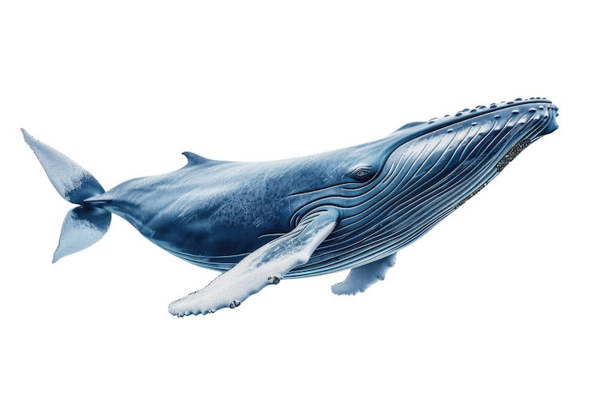

HUMPBACK WHALE
Humpback whales’ bodies are primarily black, but individuals have different amounts of white on their pectoral fins, bellies, and the undersides of their flukes (tails). Southern Hemisphere humpback whales tend to have more white markings, particularly on their flanks and bellies than do Northern Hemisphere humpback whales.
this is a site about whales
explore whales
whales
splish splash